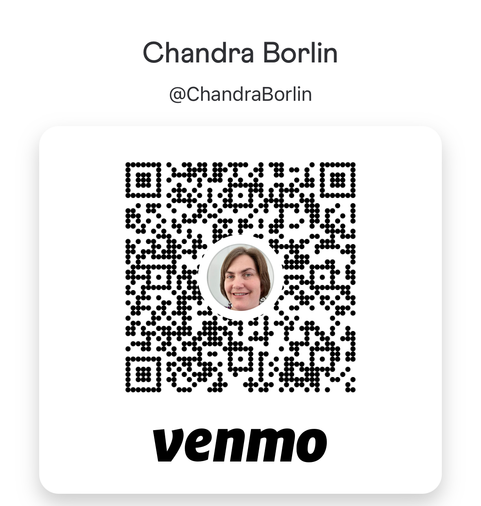

Why 4-H Matters — and Why Your Support Counts
4-H is a national youth program backed by the USDA that teaches real-world skills through hands-on projects. Whether it’s raising animals, managing a budget, presenting to an audience, or building a robot, 4-H helps young people like me develop responsibility, leadership, and problem-solving abilities that actually prepare us for life.
This year, I’m raising a market turkey and a rabbit meat pen (three rabbits sold together).
These projects come with real costs: feed, housing, equipment, and entry fees. Donations made through the 4-H Add-On Program go directly toward those expenses and help me save for future education.
Your support isn’t just appreciated—it’s an investment in someone showing up, doing the work, and learning what it takes to succeed.
How to Donate
There are two main ways you can support me and other 4-H members:
1. Bid at the Sale
At the Junior Livestock Sale, you can purchase animals raised by 4-H youth. It’s the final
step in our project and a reward for the hard work we’ve put in.
This year, I’ll be selling my rabbit and turkey. Buying one of my animals is a direct way to
support my project and help fund future educational goals.
The sale will be held on August 7 at 5:00 p.m. Location: 1542 E 73rd S, Idaho Falls, ID 83404
2. Give an Add-On
An add-on is a donation you give to an exhibitor (like me) even if you don’t buy an animal. Add-ons help cover the costs of feed, equipment, and more. You can give any amount, and it goes straight to the exhibitor.
To give an add-on:
- Contact the sale committee or auction office.
- Tell them you’d like to donate an add-on to:
Andrew Borlin – Rabbit & Turkey Project
- They accept cash or check.
- Or, if it’s easier, you can Venmo me, and I’ll turn in the money directly for processing.

Every bit of support helps—and it’s an investment in youth learning real-life skills that will last a lifetime.